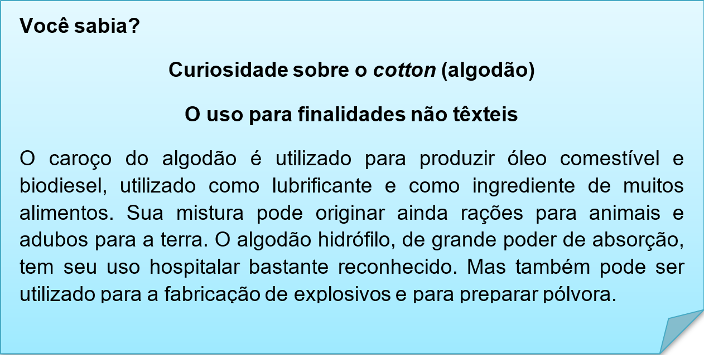
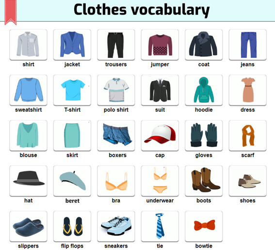

Capítulo 4: Textile and Clothes – Têxtil e Vestuário
Is fashion the biggest industry?
Clothing has always been big business for the UK. The wool trade once accounted for 80% of exports from the British Isles. Now the UK's Fashion industry is worth £26 billion & 800,000 jobs to the economy , making it the UK's largest creative industry.
Nessa unidade vamos trabalhar o vocabulário têxtil e vestuário. Vamos ver como essa indústria tem influência na economia. No texto acima trata justamente da proporção desse setor. Veja a tradução, e aprenda novas palavras e expressões.
Vestuário sempre foi rentável para o Reino Unido. O comércio de lã computa 80% da exportação das ilhas britânicas. Agora, a indústria de roupas do Reino Unido rende 26 bilhões de Euros e 800 mil empregos para a economia, tornando o Reino Unido a maior indústria criativa.
Assista ao vídeo aprenda mais sobre a textile industry
Contextualizando – Expansão de vocabulário
Aqui temos alguns objetos usados nessa indústria têxtil
Aqui a lista dos principais tecidos usados na produção de vestuários
cloth > fazenda
cotton > algodão
lace > renda
leather > cabedal
linen > linho
man-made fibres > fibras sintéticas
nylon > nylon
polyester > poliester
silk > seda
wool > lã
Curiosidade sobre roupas
O jeans possui esse nome por causa dos marinheiros de Gênova, Itália. Eles foram os primeiros a usar este tecido, de origem francesa. Esses genoveses eram chamados de “genes” pelos franceses, e posteriormente, ganharam o apelido de “jeans” pelos americanos.
Os militares russos só começaram a usar meias em 2007. Antes disso, eles enrolavam os pés com um pedaço de pano.
Em Scottsboro, Alabama (EUA), existe uma loja que vende apenas o conteúdo de bagagens extraviadas – e nunca reclamadas – das companhias aéreas.
As golas da Era Vitoriana (1837-1901) eram tão apertadas que alguns homens morreram ao usá-las.


Reconstruindo conhecimento – Expansão de vocabulário: Como falar sobre roupas e acessórios em inglês?
Muitas pessoas, ao viajar para outros países, gostam de comprar roupas. Algumas roupas de marca saem bem mais em conta comprando lá fora – mas como dizer os nomes das roupas e acessórios em inglês? Como pedir ou informar o tamanho certo que você veste? E seu você precisar devolver ou trocar a roupa? O vocabulário deste tópico traz tudo isso para você! Com certeza, agora vai ficar muito mais fácil fazer as suas compras de roupas no exterior. O tópico também conta com algumas expressões comuns com as palavras relacionadas a roupas. Enjoy.
Classificação de Roupas de acordo com artigo e estação do ano
Women’s clothing (Moda feminina), Men’s clothing (Moda masculina), Children’s clothing (Moda infantil), Baby clothing (Moda para recem nascidos), Sports clothing (Moda esportiva/Fitness), Winter clothing (Moda inverno), Summer clothing (Moda verão), Casual clothing (Vestuário casual), Formal clothing (Vestuário formal), Women’s underwear (Roupa íntima feminina), Men’s underwear (Roupa íntima masculina).
Places – lugares
Quando você for ao mall (shopping) e precisar entrar em uma clothing store (loja de roupas), você pode perguntar em inglês onde fica determinada seção da seguinte forma:
Where is the children’s clothing department? (Onde fica a seção/departamento de moda infantil?)
Os principais sizes (tamanhos)
Extra extra large (XXL) – Extra extra grande (XGG)
Extra large size (XL) – Tamanho extra grande (XG)
Extra small (XS) – Extra pequeno (PP)
Large size (L) – Tamanho grande (G)
Linen – Linho
Medium size (M) – Tamanho médio (M)
Plus size – Tamanho plus
Small size (S) – Tamanho pequeno (P)
Para perguntar o tamanho que uma pessoa veste ou usa em inglês, podemos dizer das seguintes formas:
What size do you wear? (Que tamanho você veste?)
What is your size? / what size do you take? / What size are you? (Qual o seu tamanho?)
Para responder o seu tamanho, pode usar as seguintes frases:
I wear G size. (Eu visto tamanho G.)
I take a size M. (Eu visto tamanho M.)
Do you have a larger/smaller size? (Você tem tamanho maior/menor?)
Do you have these pants in a size M? (Você tem essa calça tamanho M?)
Agora vamos aprender algumas frases e verbos relacionados ao tema
Buy – Comprar
He bought lingerie for his wife. (Ele comprou lingerie pra sua esposa.)
Change – Trocar de roupa
Change your sweatshirt, it’s dirty. (Troque o seu agasalho de moletom, está sujo.)
Fit – Servir, caber no sentido do tamanho da roupa no seu corpo
After gaining some weight, this skirt does not fit me anymore. (Após engordar, essa saia não me serve mais.)
Get dressed – Se vestir, vestir-se
I will get dressed in a minute. (Vou me vestir rapidinho.)
Pay – Pagar
How much did you pay for that overcoat? (Quanto você pagou por aquele sobretudo?)
Return – Devolver
If you want to return your dress pants you have to bring a copy of your receipt. (Se você quiser devolver sua calça social você tem que trazer a cópia do seu recibo.)
Take off – Tirar a roupa
Could you please take off your shoes? (Você pode tirar os sapatos, por favor?)
Try on – Provar, experimentar uma roupa
I would like to try on that shirt, where is the fitting room, please? (Eu gostaria de provar aquela camisa, onde é o provador, por favor?)
Wash – Lavar
How should I wash my leather coat? By hand or washing machine? (Como eu devo lavar o meu casaco de couro? A mão ou na máquina de lavar?)
Wear – Usar
I don’t like to wear black silk dress in the summer. (Eu não gosto de usar vestido preto de seda no verão.)
O que aprendi
• Nesta unidade aprendemos o vocabulário do setor têxtil e vestuário;
• Vimos umas informações sobre o cotton (algodão);
• Buscamos na histórias fatos curiosos sobre as roupas e suas origens;
• Na parte gramatical analisamos toda a estrutura que envolve o vocabulário: verbos, expressões, adjetivos e informações.
Para entender mais
Para conhecer mais sobre o vocabulário têxtil, acesse o link. Lá você terá mais conteúdos e curiosidades, além de praticar a pronúncia.
https://www.inglesonline.com.br/vocabulario-de-roupas-e-acessorios-em-ingles/
Praticando
Leia com atenção o texto e responda em português a questão
Clothes are the elements we wear on our bodies. There are different kinds of clothing which depends on the gender, age, body type, location, season, occupation, religion, social status and the purpose of wearing.
a. O texto afirma que há diferentes tipos de roupas e que esses tipos dependem de uns fatores. Quais são eles? (Linha 2)
“Types of clothes change according to age and gener and place.” Essa frase afirma que as roupas variam de gênero e lugar. Cite em inglês três gêneros de roupas. Por exemplo: Women’s clothing (roupas femininas)
____________________________________________
____________________________________________
Leia essa afirmação: “Clothes are made of fabrics, textiles or animal skin called leather.” Ela está correta ou não de acordo com nossos estudos?
____________________________________________
Observe a imagem e faça uma lista em inglês das roupas que nela aparecem.
____________________________________________
____________________________________________
____________________________________________
____________________________________________